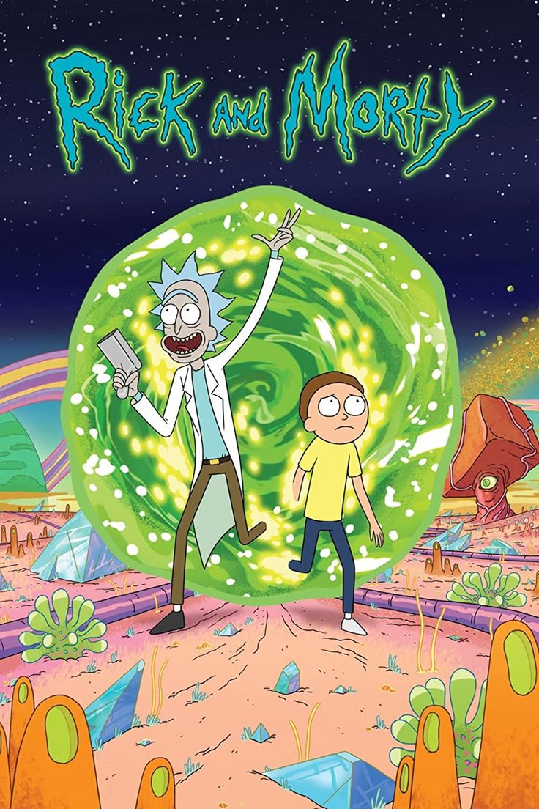
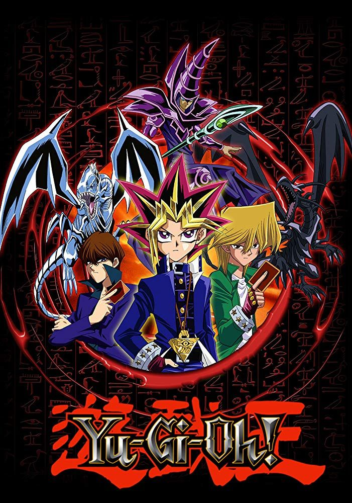

Scooby Doo
Descripcion:
La franquicia incluyen a un perro de raza gran danés parlante llamado Scooby-Doo y a cuatro adolescentes: Fred Jones, Daphne Blake, Vilma Dinkley y Shaggy Rogers. Juntos, viajan por el mundo en una camioneta llamada “La Máquina del Misterio”, resolviendo misterios relacionados con fantasmas y otras fuerzas sobrenaturales. Al final de cada episodio, las fuerzas sobrenaturales tienen una explicación racional, generalmente un criminal disfrazado que espanta a la gente para cometer sus crímenes.
Protagonista:
Scooby-Doo es un gran danés parlante y la mascota inseparable de Shaggy Rogers. Juntos, resuelven misterios sobrenaturales viajando en la icónica Mystery Machine.
Amigo inseparable de Scooby?
Descargar Serie
Bob Esponja
Descripcion:
Bob Esponja es una serie de comedia sobre una esponja de mar que vive en una piña y trabaja en un restaurante llamado El Crustáceo Cascarudo. Junto con su mejor amigo Patricio, una estrella de mar, y otros personajes como Arenita, Calamardo y Don Cangrejo, Bob se embarca en divertidas y locas aventuras en el fondo del mar. La serie combina humor absurdo, parodias, referencias culturales y mensajes positivos. Bob Esponja es una de las series animadas más exitosas y populares de la historia.

Protagonista:
Bob Esponja es una esponja de mar cuadrada y amarilla que vive en una piña en la ciudad submarina de Fondo de Bikini. Trabaja como freidor en el Crustáceo Cascarudo, junto con su vecino Calamardo Tentáculos.
Amigo inseparable de Bob?
Descargar Serie
Rick and Morty
Descripcion:
Rick y Morty es una serie de televisión animada para público adulto creada por Justin Roiland y Dan Harmon. La trama sigue las divertidas pero extrañas aventuras de Rick Sánchez, un científico “loco”, y su nieto Morty Smith. Rick viaja entre espacios dimensionales, explorando el universo y metiéndose en problemas. Morty lo acompaña, entusiasmado por recorrer el tiempo y conocer nuevas criaturas. La serie combina humor, ciencia ficción y reflexiones sobre la vida.
Protagonistas:
Rick Sanchez y Morty Smith son los protagonistas de la serie de ciencia ficción animada Rick and Morty. Rick es un científico loco y alcohólico, mientras que Morty es su nieto y lo acompaña en aventuras interdimensionales.
Hija de Rick Sánchez?
Descargar Serie
Yu-Gi-Oh
Descripcion:
Yugi Muto, un joven tímido, ama todo tipo de juegos pero es constantemente molestado por sus compañeros de clase. Un día, resuelve un antiguo rompecabezas conocido como el “Rompecabezas del Milenio” o “Puzzle Milenario”. Al hacerlo, despierta un alter ego con una personalidad arriesgada, vengativa y segura de sí misma. A partir de entonces, Yugi se ve envuelto en duelos de cartas mágicas y enfrenta desafíos sobrenaturales.
Protagonista:
Yugi Muto es el protagonista principal de la serie de anime y manga. Es un joven duelista que se enfrenta a desafíos en el juego de cartas Duel Monsters.
Eterno rival de Yugi?
Descargar Serie
Dragon Ball Z
Descripcion:
Dragon Ball Z es la continuación de las aventuras de Goku y sus amigos, que defienden la Tierra de villanos de diferentes orígenes. La serie se divide en varias sagas, que narran los enfrentamientos contra los saiyajines, Freezer, los androides, Cell y Majin Buu. Goku descubre su verdadera raza, los saiyajines, y alcanza el nivel de Super Saiyajin, una forma de gran poder y furia. También muestra el crecimiento de su hijo Gohan, que se convierte en un guerrero capaz de superar a su padre.
Protagonista:
Goku, también conocido como Kakarot, es el personaje central de la serie de anime Dragon Ball Z. Es un poderoso guerrero Saiyan que lucha contra enemigos formidables para proteger la Tierra.
Hijo mas poderoso de Goku
Descargar Serie
Arcane
Descripcion:
Arcane es una serie animada basada en el videojuego League of Legends, que narra los orígenes de algunos de sus personajes. La serie se ambienta en dos ciudades opuestas: Piltover, la ciudad de la ciencia y la prosperidad, y Zaun, la ciudad del crimen y la pobreza. La trama se centra en la relación entre dos hermanas huérfanas, Vi y Jinx, que se ven separadas por sus ideales y sus alianzas. Arcane explora temas como la desigualdad, la corrupción, la magia y la tecnología.

Protagonistas:
Jinx y Vi son los personajes principales de la serie animada Arcane, basada en el universo de League of Legends. Jinx es una criminal y Vi es una exdelincuente convertida en oficial de policía.
Que personaje no aparece en la Season1?
Descargar Serie